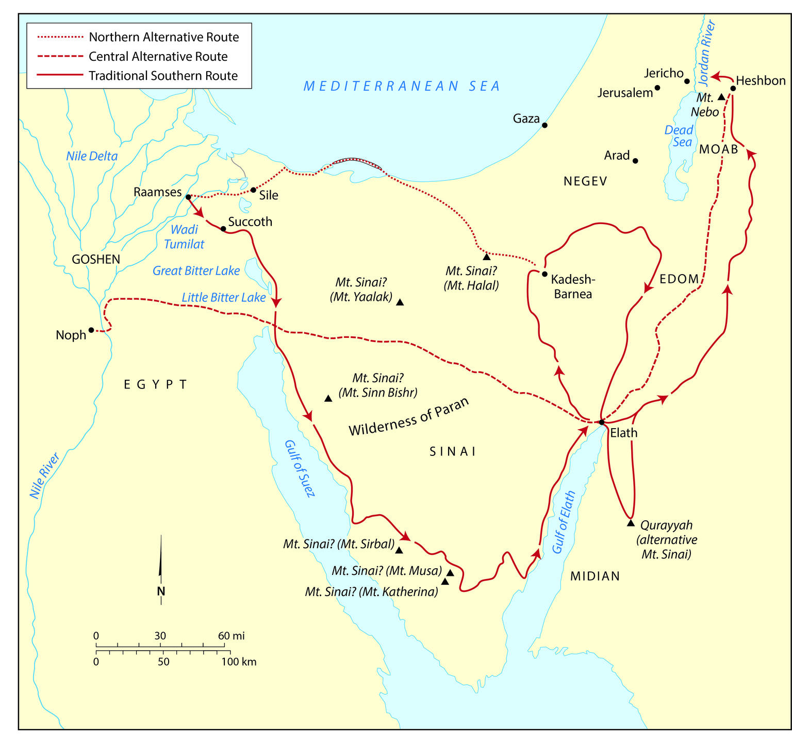
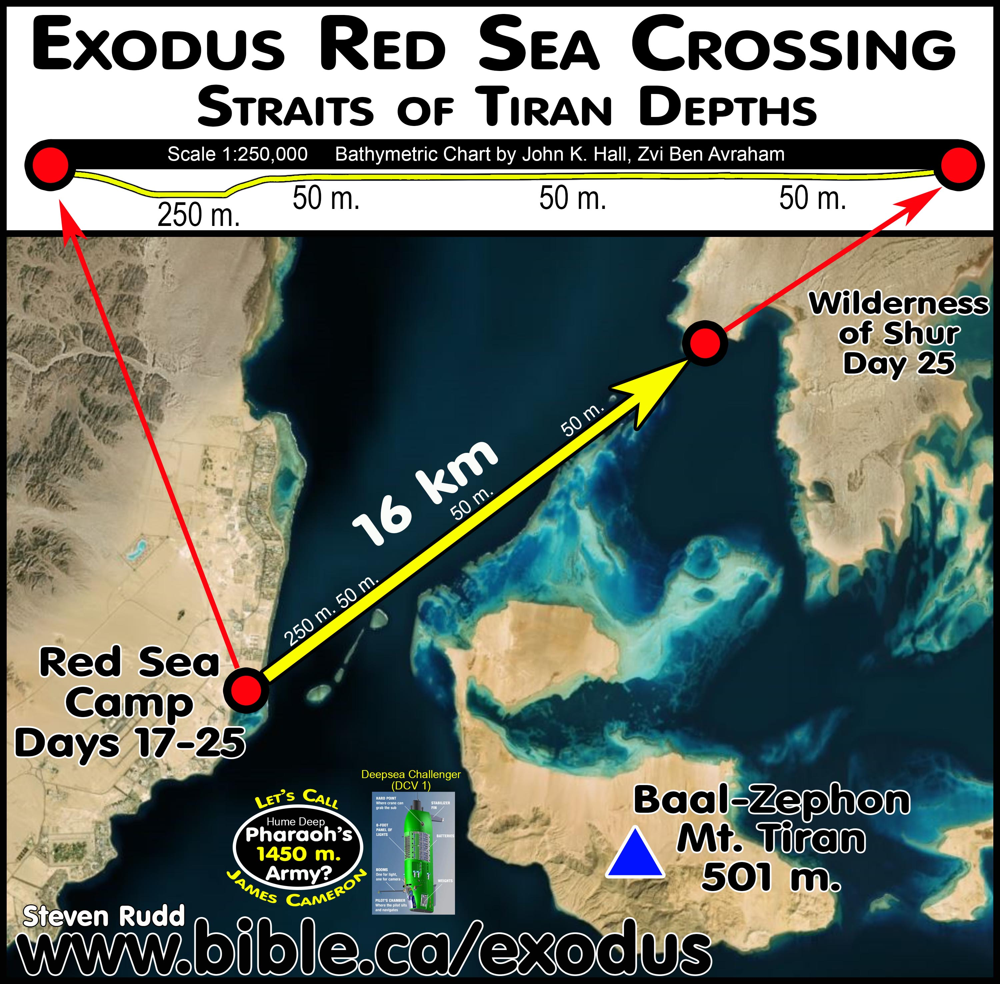

Êxodo 12-15
Período: ~1446 a.C. (Nisã 14-15 - A Grande Libertação)
A Páscoa (Pesach) marca o evento central da libertação de Israel. O cordeiro pascal, sacrificado na tarde do dia 14 de Nisã, prefigura o sacrifício de Cristo. O sangue nas ombreiras das portas protegia os israelitas da décima praga, enquanto o Egito sofria o julgamento final.
A Travessia do Mar Vermelho: O local exato é debatido entre estudiosos. Teorias incluem: (1) Lagos Amargos, (2) Golfo de Suez, (3) Golfo de Ácaba (Estreito de Tirã). Evidências arqueológicas submárinas no Estreito de Tirã sugerem uma possível rota, com profundidades adequadas para a narrativa bíblica. A travessia milagrosa demonstrou o poder absoluto de Yahweh sobre a natureza e os exércitos do Faraó.
Diferentes teorias sobre a rota do Êxodo e a localização da travessia do Mar Vermelho.

Fonte: Biblical Archaeology - Multiple Route Theories
Mapa detalhado mostrando a possível localização da travessia no Estreito de Tirã, com profundidades e distâncias.

Fonte: Bible.ca - Red Sea Crossing Archaeological Research
Êxodo 12:1-15:21
Este bloco temático de Êxodo, abrangendo os capítulos 12 a 15, narra os eventos cruciais que culminaram na libertação de Israel da escravidão egípcia e o estabelecimento de sua identidade como nação redimida por Deus. A narrativa se inicia com a instituição da Páscoa, um rito memorial que se tornaria central na fé israelita, simbolizando a proteção divina e a passagem da morte para a vida. A décima praga, a morte dos primogênitos egípcios, força Faraó a liberar os israelitas, marcando o início de sua jornada rumo à liberdade.
A saída apressada do Egito é seguida pela perseguição implacável do exército faraônico, culminando no dramático evento da travessia do Mar Vermelho. Este milagre não apenas sela a libertação física de Israel, mas também demonstra o poder soberano de Deus sobre as forças da natureza e sobre os impérios humanos. A destruição do exército egípcio no mar serve como um testemunho inegável da fidelidade de Yahweh ao seu povo e de seu juízo contra a opressão.
O clímax deste bloco é o cântico de vitória de Moisés e Miriã (Êxodo 15), uma das mais antigas e poéticas passagens da Bíblia. Este hino de louvor celebra a grandiosidade de Deus como guerreiro e salvador, reforçando a teologia da redenção e a resposta de adoração do povo. A experiência no Mar Vermelho solidifica a aliança entre Deus e Israel, estabelecendo um precedente para a confiança e obediência futuras da nação recém-formada.
Em suma, Êxodo 12-15 é um relato fundamental que estabelece os pilares da fé israelita: a redenção pela graça divina, a soberania de Deus na história e a importância da adoração como resposta à sua fidelidade. Estes eventos não são meros episódios históricos, mas atos fundacionais que prefiguram a maior libertação a ser realizada em Cristo, o Cordeiro Pascal definitivo.
O período do Êxodo, tradicionalmente situado no Novo Reino do Egito (aproximadamente 1450-1250 a.C.), é um ponto de intensa discussão acadêmica. Embora a arqueologia egípcia não forneça evidências diretas e inequívocas da presença israelita ou de sua saída em massa, o relato bíblico se insere em um cenário plausível para a época. O Novo Reino foi um período de grande poder e expansão egípcia, com faraós como Tutmés III, Amenófis II e Ramsés II, conhecidos por suas vastas construções e campanhas militares, que frequentemente utilizavam mão de obra escrava. A descrição da opressão israelita em cidades-celeiro como Pitom e Ramessés (Êxodo 1:11) se alinha com a prática egípcia de construir grandes centros administrativos e militares usando trabalho forçado [1].
As práticas culturais egípcias e israelitas se chocam e se complementam na narrativa. A Páscoa, por exemplo, embora instituída por Deus, pode ter tido elementos que ressoavam com rituais pastoris semitas de sacrifício de primavera, mas foi ressignificada para celebrar a libertação divina. O uso de sangue nos umbrais das portas, uma prática que em outras culturas poderia ter conotações apotropaicas (de afastar o mal), aqui é um sinal de obediência e fé na promessa de Deus. Em contraste, as pragas são um ataque direto aos deuses egípcios, demonstrando a superioridade de Yahweh sobre o panteão egípcio, que incluía divindades associadas ao Nilo, ao sol, à fertilidade e até mesmo ao próprio Faraó, considerado um deus vivo [2].
A geografia desempenha um papel crucial na rota do Êxodo. A saída de Ramessés, no delta do Nilo, e a subsequente jornada pelo deserto em direção ao Mar Vermelho (Yam Suph, que pode significar
Mar de Juncos ou Mar Vermelho) é um percurso desafiador. A decisão de Deus de não levar Israel pelo caminho mais curto, a
terra dos filisteus, mas sim pelo deserto, demonstra uma estratégia divina para proteger o povo de conflitos prematuros e fortalecer sua dependência d'Ele [3]. A localização exata da travessia do Mar Vermelho é debatida, mas a narrativa enfatiza o caráter milagroso do evento, independentemente da geografia precisa.
A arqueologia, embora não confirme diretamente os eventos do Êxodo, oferece insights sobre o contexto da época. Descobertas como a Estela de Merneptah, que menciona
Israel como um povo já estabelecido em Canaã por volta do século XIII a.C., são frequentemente citadas em discussões sobre a datação do Êxodo. Embora não haja consenso, a ausência de evidências arqueológicas diretas não invalida a narrativa bíblica, que se concentra na teologia e no significado dos eventos para a fé de Israel, e não em um registro histórico no sentido moderno [4].
Êxodo 12 inicia com a instituição da Páscoa, um evento central na história da redenção de Israel. Deus instrui Moisés e Arão sobre os detalhes do ritual: a seleção de um cordeiro macho de um ano, sem defeito, no décimo dia do mês de Abibe (ou Nisã), e seu sacrifício no décimo quarto dia. O sangue do cordeiro deveria ser aplicado nos umbrais e nas vergas das portas das casas israelitas, servindo como um sinal para que o anjo da morte passasse por elas, poupando os primogênitos. A carne do cordeiro deveria ser assada e comida com pães asmos (מַצּוֹת, matzot) e ervas amargas (מְרֹרִים, merorim), simbolizando a pressa da saída e a amargura da escravidão [5].
A Páscoa (פֶּסַח, pesach, que significa
passar por cima) é mais do que um mero ritual; é um memorial perpétuo da libertação divina. A teologia subjacente é a da substituição: o cordeiro morre no lugar do primogênito, prefigurando o sacrifício de Cristo, o Cordeiro de Deus que tira o pecado do mundo (João 1:29). A décima praga, a morte dos primogênitos egípcios, é o clímax dos juízos divinos contra o Egito e seus deuses, demonstrando a soberania absoluta de Yahweh [6].
Após a devastadora décima praga, Faraó finalmente cede e expulsa os israelitas do Egito. A saída é apressada, com os israelitas levando consigo o que puderam, incluindo os despojos dos egípcios (ouro, prata e roupas), cumprindo a promessa divina a Abraão (Gênesis 15:14). Uma "multidão mista" (עֵרֶב רַב, erev rav) também acompanha os israelitas, indicando que nem todos os que saíram eram de ascendência israelita, mas se uniram ao povo de Deus em sua jornada [7].
Deus, em sua providência, guia o povo pelo caminho do deserto em direção ao Mar Vermelho, evitando a rota mais curta pela terra dos filisteus para protegê-los de conflitos militares para os quais não estavam preparados. A presença divina é manifesta de forma visível e constante através de uma coluna de nuvem durante o dia e uma coluna de fogo durante a noite. Essa teofania (manifestação de Deus) não apenas os guia, mas também os protege do sol escaldante do deserto e ilumina seu caminho, simbolizando a liderança e o cuidado ininterruptos de Deus sobre seu povo [8].
O drama atinge seu ápice quando Faraó, endurecido novamente, persegue os israelitas com seu exército, encurralando-os entre o Mar Vermelho e as montanhas. O povo, tomado pelo medo, clama a Moisés e a Deus. A resposta de Moisés é um chamado à confiança: "Não temais; estai quietos, e vede o livramento do Senhor, que hoje vos fará" (Êxodo 14:13). Deus instrui Moisés a estender seu cajado sobre o mar, e um forte vento oriental sopra durante toda a noite, dividindo as águas e criando um caminho seco. Os israelitas atravessam o mar em terra seca, com as águas formando muros à direita e à esquerda [9].
Quando os egípcios tentam seguir, Deus causa confusão em seu exército, travando as rodas de seus carros. Moisés estende novamente a mão sobre o mar, e as águas retornam, afogando Faraó e todo o seu exército. Este evento é a demonstração definitiva do poder de Deus sobre o Egito e a libertação completa de Israel. A travessia do Mar Vermelho é um ato de salvação e juízo, estabelecendo a reputação de Yahweh como o único Deus verdadeiro e poderoso [10].
Em resposta à espetacular libertação, Moisés e os filhos de Israel entoam um cântico de vitória, conhecido como o Cântico do Mar (שִׁירַת הַיָּם, Shirat HaYam). Este hino celebra a majestade e o poder de Deus como guerreiro que triunfou sobre seus inimigos. Ele exalta a santidade, a força e a fidelidade de Yahweh, que não apenas salvou seu povo, mas também os guiará à sua santa habitação. Miriã, a profetisa, lidera as mulheres em danças e cânticos, repetindo as palavras de louvor, o que demonstra a importância da adoração comunitária e expressiva em resposta aos atos de Deus [11].
O cântico não é apenas uma celebração do passado, mas também uma declaração de fé no futuro, antecipando a entrada na Terra Prometida e o estabelecimento do santuário de Deus. A teologia do cântico enfatiza a soberania de Deus sobre a história, sua justiça e seu amor redentor. Ele serve como um modelo para a adoração e um lembrete perpétuo da fidelidade de Deus em cumprir suas promessas.
A graça de Deus permeia todo o bloco de Êxodo 12-15, manifestando-se de maneiras profundas e multifacetadas. Primeiramente, a instituição da Páscoa é um ato de graça imerecida. Israel, embora escravo e pecador, é poupado do juízo que recai sobre o Egito não por seus próprios méritos, mas pela obediência a um ritual divinamente ordenado. O sangue do cordeiro nos umbrais das portas é o sinal da cobertura graciosa de Deus, que passa por cima do pecado e da morte. Essa é uma graça que salva da condenação e oferece uma nova vida [12].
Em segundo lugar, a guia divina através da coluna de nuvem e fogo é uma expressão contínua da graça de Deus. Mesmo após a libertação, Israel é um povo vulnerável no deserto, sem direção e sem recursos. Deus, em sua misericórdia, não os abandona, mas os lidera e protege visivelmente, dia e noite. Essa provisão constante demonstra que a graça de Deus não se limita ao ato inicial de salvação, mas se estende à sustentação e orientação diária de seu povo [13].
Finalmente, a travessia do Mar Vermelho é o ápice da graça redentora. Quando Israel está encurralado e desesperado, Deus intervém de forma milagrosa, abrindo um caminho onde não havia. A destruição do exército egípcio não é resultado da força de Israel, mas da intervenção soberana de Deus em seu favor. Essa graça não apenas liberta da opressão, mas também aniquila o inimigo, garantindo a segurança e a liberdade do povo. É uma graça poderosa que transforma a impossibilidade em milagre e a escravidão em redenção [14].
A adoração em Êxodo 12-15 é multifacetada, abrangendo desde a obediência ritualística até a expressão espontânea de louvor. A instituição da Páscoa é o primeiro e mais significativo ato de adoração ritual. A obediência meticulosa às instruções de Deus sobre o sacrifício do cordeiro, a aplicação do sangue e a refeição pascal, demonstra uma adoração baseada na fé e na confiança na palavra divina. Esta adoração é um memorial, um ato de recordar e reencenar a libertação de Deus, transmitindo sua importância às futuras gerações [15].
A resposta do povo diante da travessia do Mar Vermelho é um exemplo de adoração espontânea e jubilosa. O cântico de Moisés e Miriã (Êxodo 15) é uma explosão de louvor e gratidão, celebrando a vitória de Deus com música, dança e exaltação. Esta forma de adoração é uma resposta emocional e corporal à grandiosidade dos atos divinos, reconhecendo a soberania e o poder de Yahweh. É uma adoração que brota de um coração liberto e agradecido, que viu a mão de Deus em ação [16].
Além disso, a adoração também se manifesta na confiança e na dependência de Deus em meio ao medo e à incerteza. Embora o povo tenha murmurado em alguns momentos, a liderança de Moisés os direciona a clamar ao Senhor e a marchar em obediência. A própria jornada pelo deserto, sob a guia da coluna de nuvem e fogo, pode ser vista como um ato contínuo de adoração, onde a fé e a obediência são testadas e fortalecidas. A adoração, portanto, não se restringe a rituais ou cânticos, mas abrange toda a vida de um povo que reconhece a Deus como seu libertador e guia.
Os eventos de Êxodo 12-15 revelam aspectos fundamentais do Reino de Deus, embora o conceito de "reino" ainda não esteja plenamente desenvolvido na teologia do Antigo Testamento. Primeiramente, a libertação de Israel do Egito demonstra a soberania de Deus sobre todas as nações e poderes terrenos. O Faraó, que se considerava um deus, é humilhado e seu império é destruído, mostrando que o verdadeiro Rei é Yahweh. O Reino de Deus é, portanto, um reino de poder que subjuga os inimigos e liberta os oprimidos [17].
Em segundo lugar, a formação de Israel como nação após a saída do Egito estabelece as bases para um povo teocrático, governado diretamente por Deus. A Páscoa e as leis subsequentes são dadas por Deus para regular a vida de seu povo, indicando que o Reino de Deus é um reino de justiça e ordem. A obediência às suas leis é essencial para a participação plena neste reino. A presença de Deus na coluna de nuvem e fogo simboliza sua realeza e sua presença ativa no meio de seu povo, guiando-os e protegendo-os como um Rei cuida de seus súditos [18].
Finalmente, a promessa de levar Israel à Terra Prometida e estabelecer um santuário entre eles aponta para a natureza escatológica do Reino de Deus. A libertação do Egito é apenas o começo de uma jornada em direção a um lugar de descanso e comunhão com Deus. O Reino de Deus é um reino de promessas cumpridas, onde Deus habitará com seu povo e reinará soberanamente. Estes eventos prefiguram o Reino messiânico, onde Cristo reinará e trará a redenção final e completa para toda a criação.
Os eventos de Êxodo 12-15 são pilares da teologia bíblica, com profundas implicações para a compreensão da redenção, da aliança e da santidade. A Redenção é o tema central, manifestada na libertação de Israel da escravidão egípcia. Essa redenção não é apenas um evento histórico, mas um ato salvífico de Deus que estabelece um padrão para toda a história da salvação. A Páscoa, com o sacrifício do cordeiro, é o protótipo da redenção pelo sangue, apontando para a obra expiatória de Jesus Cristo. A travessia do Mar Vermelho é a consumação dessa redenção, um batismo de libertação que separa o povo de Deus do mundo e de seus opressores [19].
A Aliança é reforçada e renovada através desses eventos. A libertação do Egito é o cumprimento da aliança abraâmica, onde Deus promete fazer de Abraão uma grande nação e dar-lhe uma terra. A instituição da Páscoa e as leis subsequentes são os termos dessa aliança, estabelecendo a relação especial entre Deus e Israel. A fidelidade de Deus em libertar seu povo demonstra sua lealdade à aliança, e a resposta de Israel em adoração e obediência é a sua parte na manutenção dessa relação. A aliança, portanto, é um pacto de graça e responsabilidade mútua.
A Santidade de Deus é revelada de forma impressionante. As pragas, especialmente a décima, demonstram a santidade de Deus em seu juízo contra o pecado e a idolatria. A exigência de santidade para o povo de Israel, manifestada nas leis da Páscoa e na consagração dos primogênitos, reflete o caráter santo de Deus. Ele é um Deus que exige separação do pecado e dedicação a Ele. A santidade não é apenas uma característica divina, mas um chamado para seu povo, que deve refletir seu caráter em sua vida e adoração [20].
Em termos de Cristologia, Êxodo 12-15 é rico em prefigurações de Cristo. Jesus é o Cordeiro Pascal definitivo, cujo sangue derramado na cruz oferece a redenção final e eterna para todos os que creem. Ele é o verdadeiro "passar por cima" (Páscoa), que nos livra da morte e do juízo. A travessia do Mar Vermelho é vista no Novo Testamento como um tipo de batismo (1 Coríntios 10:1-2), onde os crentes são identificados com Cristo em sua morte e ressurreição, passando da escravidão do pecado para a liberdade em Cristo. A coluna de nuvem e fogo, que guia e protege Israel, aponta para Cristo como a luz do mundo e o guia de seu povo [21].
O Plano de Redenção é claramente delineado. A libertação do Egito é um estágio crucial no plano de Deus para redimir a humanidade. Ele escolhe um povo, o liberta da escravidão e o conduz a uma terra prometida, estabelecendo um modelo para a salvação universal. Este plano culmina em Cristo, que estende a redenção a todas as nações. Os eventos de Êxodo 12-15 são, portanto, um microcosmo do plano redentor de Deus, que se desdobra ao longo da história bíblica e encontra sua plenitude em Jesus. Temas teológicos maiores como a soberania divina, a justiça de Deus, a fidelidade à aliança e a natureza da salvação são profundamente explorados neste bloco, fornecendo uma base sólida para a teologia cristã.
Os eventos de Êxodo 12-15 oferecem ricas aplicações práticas para a vida pessoal, a igreja e a sociedade contemporânea.
Para a vida pessoal, a narrativa da Páscoa e da travessia do Mar Vermelho nos lembra da nossa própria necessidade de libertação do pecado e da escravidão espiritual. Assim como Israel foi salvo pelo sangue do cordeiro, somos salvos pelo sangue de Cristo. Isso nos chama a uma fé ativa e obediente, confiando na provisão e na proteção de Deus em meio às adversidades. A experiência de Israel no deserto, com seus medos e murmurações, serve como um espelho para nossas próprias lutas de fé, incentivando-nos a confiar em Deus mesmo quando as circunstâncias parecem impossíveis. A coluna de nuvem e fogo nos lembra que Deus nos guia e nos protege em nossa jornada diária, e que devemos buscar sua direção em todas as áreas de nossa vida [22].
Para a Igreja, este bloco ressalta a importância da memória e da celebração da redenção. A Páscoa é um protótipo da Ceia do Senhor, um memorial que a igreja celebra para recordar o sacrifício de Cristo e sua vitória sobre o pecado e a morte. A adoração jubilosa de Moisés e Miriã após a travessia do Mar Vermelho é um modelo para a adoração congregacional, que deve ser uma resposta de gratidão e louvor aos atos salvíficos de Deus. A igreja é chamada a ser uma comunidade de redimidos, que vive em santidade e proclama a soberania de Deus ao mundo, sendo um farol de esperança e libertação para os oprimidos [23].
Para a sociedade e questões contemporâneas, a história do Êxodo ressoa com temas de justiça social, libertação e a luta contra a opressão. A intervenção de Deus em favor dos escravos israelitas serve como um lembrete de que Deus se importa com os marginalizados e oprimidos, e que a fé bíblica nos chama a lutar por justiça e liberdade para todos. A narrativa desafia sistemas de poder que exploram e desumanizam, afirmando a dignidade de cada indivíduo como criado à imagem de Deus. Em um mundo marcado por desigualdades e injustiças, a história do Êxodo nos inspira a ser agentes de transformação, buscando a libertação em todas as suas dimensões, tanto espiritual quanto social [24].
[1] Kitchen, K. A. On the Reliability of the Old Testament. Wm. B. Eerdmans Publishing, 2003.
[2] Stuart, Douglas K. Exodus. Vol. 2. New American Commentary. Broadman & Holman Publishers, 2006.
[3] Durham, John I. Exodus. Vol. 3. Word Biblical Commentary. Thomas Nelson, 1987.
[4] Childs, Brevard S. The Book of Exodus: A Critical, Theological Commentary. Old Testament Library. Westminster John Knox Press, 1974.
[5] Estilo Adoração. "Estudo de Êxodo 12: Esboço e Comentário Bíblico." Acessado em 19 de fevereiro de 2026. https://estiloadoracao.com/exodo-12-estudo/
[6] Ibid.
[7] Ibid.
[8] Estilo Adoração. "Estudo de Êxodo 13: Esboço e Comentário Bíblico." Acessado em 19 de fevereiro de 2026. https://estiloadoracao.com/exodo-13-estudo/
[9] Escola Bíblica Dominical do Arsenal. "Êxodo 13 A 15: A Saída do Egito e a Passagem pelo Mar." Acessado em 19 de fevereiro de 2026. https://ebd.veropeso.com.br/exodo-13-a-15-a-saida-do-egito-e-a-passagem-pelo-mar/
[10] Ibid.
[11] Ibid.
[12] Estilo Adoração. "Estudo de Êxodo 12: Esboço e Comentário Bíblico." Acessado em 19 de fevereiro de 2026. https://estiloadoracao.com/exodo-12-estudo/
[13] Estilo Adoração. "Estudo de Êxodo 13: Esboço e Comentário Bíblico." Acessado em 19 de fevereiro de 2026. https://estiloadoracao.com/exodo-13-estudo/
[14] Escola Bíblica Dominical do Arsenal. "Êxodo 13 A 15: A Saída do Egito e a Passagem pelo Mar." Acessado em 19 de fevereiro de 2026. https://ebd.veropeso.com.br/exodo-13-a-15-a-saida-do-egito-e-a-passagem-pelo-mar/
[15] Estilo Adoração. "Estudo de Êxodo 12: Esboço e Comentário Bíblico." Acessado em 19 de fevereiro de 2026. https://estiloadoracao.com/exodo-12-estudo/
[16] Escola Bíblica Dominical do Arsenal. "Êxodo 13 A 15: A Saída do Egito e a Passagem pelo Mar." Acessado em 19 de fevereiro de 2026. https://ebd.veropeso.com.br/exodo-13-a-15-a-saida-do-egito-e-a-passagem-pelo-mar/
[17] Ibid.
[18] Estilo Adoração. "Estudo de Êxodo 13: Esboço e Comentário Bíblico." Acessado em 19 de fevereiro de 2026. https://estiloadoracao.com/exodo-13-estudo/
[19] Durham, John I. Exodus. Vol. 3. Word Biblical Commentary. Thomas Nelson, 1987.
[20] Stuart, Douglas K. Exodus. Vol. 2. New American Commentary. Broadman & Holman Publishers, 2006.
[21] Childs, Brevard S. The Book of Exodus: A Critical, Theological Commentary. Old Testament Library. Westminster John Knox Press, 1974.
[22] Escola Bíblica Dominical do Arsenal. "Êxodo 13 A 15: A Saída do Egito e a Passagem pelo Mar." Acessado em 19 de fevereiro de 2026. https://ebd.veropeso.com.br/exodo-13-a-15-a-saida-do-egito-e-a-passagem-pelo-mar/
[23] Ibid.
[24] Ibid.